Analysis of Grades
Aleksander Dietrichson, PhD
analysis-of-grades.RmdLearning analytics practitioners are frequently tasked with analyzing and generating insights from students’ grades. In this article we will explore some techniques using as our source data available through the moodleR package.
Accessing the Data
The grades available on the Moodle instance are conveniently accessible through the mdl_grades() function once the library is loaded.
We will be using dplyr verbs and plotting functionality from ggplot2 so we can go ahead and load these libraries as well.
Now get a reference to the grades table
my_grades <- mdl_grades()And take a preliminary look:
summary(my_grades)
#> ----------
#> # of Grades: 1.4M
#> Missing: 945.2K
#> Courses: 2.8K
#> Users: 22.9K
#> Normalized Grades:
#> Median: 0.967
#> Mean: 0.859
#> SD: 0.336Assessing the Distribution
As pointed out by several learning analytics researchers, e.g. me, grades often have distributions that are not normal. There are some theoretical reasons for this, the most important two of which are that a) it has a lower and an upper bound and b) it is not a continuous variable.
Visualization
MoodleR comes with a generic plot function for Moodle grades which produces a histogram of normalized grades. The grades are normalized by dividing the rawgrade by rawgrademax in the grades table. This mostly produces a number between 0 and 1 which is conveniently interpretable as a percentage.
my_grades %>%
plot
#> Warning: Removed 2 rows containing missing values (geom_bar).
In some cases, however, grades are created that are outside of these logical bounds. There may be different reasons for this and consequently different ways of dealing with this sort of anomaly; the easiest of which is, of course, to do as the plot function does: remove the offending observations.
Visualization with Density Plot
Before proceeding with further exploration let’s apply the same normalization and filters as does the generic plot function.
my_grades <- my_grades %>%
mutate(normalized_grade = rawgrade/rawgrademax) %>%
filter(
!is.na(normalized_grade),
normalized_grade >=0,
normalized_grade <=1
)Now we can create a dentity plot.
my_grades %>%
ggplot(aes(normalized_grade)) +
geom_density(color="red", fill="red", alpha=.4)
As we could already see from the histgram the distribution is heavily skewed toward the top, presumably because a lot of grades items have a 100% success rate.
Formal Test
We can use the shapiro.test in R to formally test if we can assume the distribution of these data to be normal. This test has a limitation on \(N\leq5000\), so we will need to create a sample, since our dataset is considerably larger.
my_grades %>%
slice_sample(n=5000) %>%
pull(normalized_grade) %>%
shapiro.test()
#>
#> Shapiro-Wilk normality test
#>
#> data: .
#> W = 0.60374, p-value < 2.2e-16The Shapiro-Wilk tests the null-hypothesis of a sample from a normal distribution. As we can easily see this hypothesis is rejected.
Assessing Distribution for Specific Courses
If we apply to use this technique for a set of specific courses that we are working on, this is easily done with a dply::filter()
# Get a random sample of courseids
my_sample_ids <-
my_grades %>%
select(courseid) %>%
collect() %>%
filter(!duplicated(courseid)) %>%
slice_sample(n=10) %>%
pull(courseid)
my_grades %>%
filter(courseid %in% my_sample_ids) %>%
slice_sample(n=5000) %>%
pull(normalized_grade) %>%
shapiro.test()
#>
#> Shapiro-Wilk normality test
#>
#> data: .
#> W = 0.65656, p-value < 2.2e-16We see essentially the same results.
Conclusion
The non-normal distribution of grades, which is both a theoretical phenomenon and which we have just empirically proved, implies that we will likely be unsuccessful if we endeavor to model these data using parametric methods, such as vanilla linear regression. Luckily there are many non-parametric alternatives that will likely serve us well, such as ordinal and logistic regression.